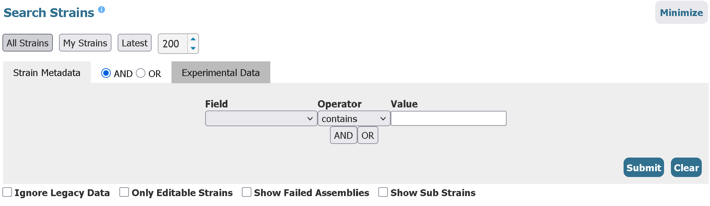
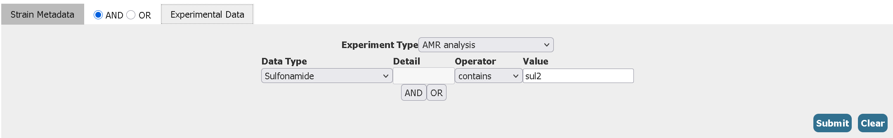

Module 3
Using publicly available data for pathogen surveillance
Public Genomic Databases for Pathogen Surveillance
- Free, accessible, and global data can be integrated for comprehensive monitoring of infectious diseases
- Helps contextualize local outbreaks/epidemics on a global scale (i.e: Has this strain been seen before? When? Where?)
- Allows comparisons between different time periods, geographical locations, and strains of different genetic backgrounds.
Understanding how to use the different sources of publicly available data along with careful interpretation of metadata is key for pathogen genomics research
Key NCBI Resources
BioProject, BioSample, and SRA
BioProject
The BioProject serves as a central repository linking all deposited data for a specific research project. The BioProject is a single place that can be used to find all other diverse data types deposited under that one project.
BioProjects will have identifiers (or accession number) starting with PRJNA
The BioProject accession for the source of the sample data we are using in this module is PRJNA1230142. Click on the link and take a look at the information available.
Below which, you can also find individual links to each sample record under the BioProject along with the option to download the summary table.
BioSample
Like how the BioProject is the link to all samples deposited under a single project, the BioSample is the link to all data deposited for a single sample. This includes metadata for a single sample (organism, collection site, etc.), the raw reads for that sample (if deposited), and the genome assembly/annotation data. The BioSample also serves as link back to the BioProject.
BioSamples will have identifiers (or accession number) starting with SAM
Click on the BioSample link to any one of the records and take a look.
The attributes section in each BioSample record comprises important metadata regarding when and where the sample was collected, and some information about strain background and genotype. Further below you can access the SRA (raw reads) and Nucleotide (assembly) records for each BioSample.
Remember that metadata is simply what is reported by the submitter. You will often find samples with vague descriptions, typos or even no metadata at all. When you are depositing samples in NCBI make sure to provide rich metadata with no errors!
SRA (Sequence Read Archive): Raw fastq reads
SRA is a repository of all high-throughput sequencing data. It contains raw sequence reads from genomic, metagenomic, and transcriptomic sources.
Through the BioSample, you can also access the raw reads by clicking on the SRA link at the bottom of the page. This will take you to the SRA experiment page.
The SRA experiment has information regarding how the reads were generated (i.e the experimental design). This also links back to the BioProject and BioSample.
The SRA experiment accessions start with SRX, ERX or DRX.
The SRA experiment page also link to the SRA run for that sample. The SRA run page has the actual .fastq sequence reads. The SRA runs have accessions that start with SRR,ERR or DRR
The SRA run page for a given sample also links back to the SRA experiment, BioSample and BioProject. It also has a download link to the raw fastq reads.
Navigate to the SRR page for any sample and take a look at the information available.
Nucleotide sequences
NCBI has multiple nucleotide sequence databases, but all deposited sequences are stored in Nuccore - this can be individual contigs from each assembly, plasmid sequences, or gene sequences.
There are smaller databases with more specific nucleotide sequences branching from Nuccore, for eg: the Gene database for gene sequences and Genome database for whole genome sequences. The Genome (or ‘Assembly’) database accessions begin with ASM. The ASM record for a given sample provides the assembly itself, assembly statistics, annotation information and also links back to the BioSample and BioProject.
The assembly can be obtained from RefSeq or GenBank, two repositories of genome sequences deposited in NCBI with minor differences.For our purposes, we will mostly be interacting with GenBank. GenBank accessions start with GCA. Navigate to the genome assembly page for any sample and take a look.
Retrieving Data from NCBI via Command Line
As you may have seen above, it is possible to click through the NCBI website and access various types of information from a given sample. However, this starts becoming impractical as soon as you need files on hundreds or even tens of samples. Luckily, there are useful command-line tools available that let us programmatically retrieve data from NCBI.
ncbi-datasets CLI
This is the official NCBI software for accessing different datasets. If you have the BioSample or BioProject accession, datasets lets you download assemblies, annotations and summary information.
datasets download genome accession GCA_000486855.2 --filename GCA_000486855.2.zip --include cds,genome,protein,gbff,gff3 A zip file will be downloaded which you can extract using the unzip command and access the files.
unzip GCA_000486855.2.zipUse datasets download genome --help to see the different options, you can fetch a lot of data by using the right set of options!
ncbi-genome-download
This is an alternative to ncbi datasets that is very similar. ncbi-genome-download is not an official tool made and maintained by NCBI, it was just the bioinformatics community’s solution to downloading NCBI datasets before datasets existed. It is still a viable alternative today. It offers some options not found in datasets such as downloading assembly metadata in .tsv.
ncbi-genome-download -A GCA_049745
255.1,GCA_049744095.1,GCA_049744075.1,GCA_049744695.1,GCA_049744875.1 -m metadata.tsv bacteriasra-tools
The SRA Toolkit is NCBI’s official software for downloading and extracting fastq files from SRA runs. It has two main parts - prefetch and fasterq-dump.
prefetch downloads an SRA run in .sra format which can then be converted to .fastq using fasterq-dump. Alternatively you can also directly download reads using fasterq-dump
fasterq-dump SRR3252850EXERCISE: retrieve data from NCBI using datasets
Download only the assemblies in the GenBank database from the BioProject
PRJNA1230142Click to reveal answer
datasets download genome accession PRJNA1230142 --assembly-source 'GenBank' --include 'genome'Download all “chromosome” and “complete” level Salmonella enterica assemblies and their corresponding annotation files in genbank format from the GenBank database deposited after October 1st, 2025.
Click to reveal answer
datasets download genome taxon 'Salmonella enterica' --assembly-source 'GenBank' --assembly-level 'chromosome,complete' --include 'genome,gbff' --released-after 2025-10-01
Exploring EnteroBase
Enterobase is a web-based platform for genomic epidemiology of key pathogens such as Salmonella, Shigella, MTb, and others.
Like NCBI, EnteroBase is also a repository of sequencing data. However, unlike NCBI, EnteroBase is a lot more specific in its scope. It only hosts data regarding a handful of pathogens, and the focus is more on tracking different lineages temporally and geographically. This makes EnteroBase a rich source of metadata for specific organisms.
Head over to https://enterobase.warwick.ac.uk/ and select “Salmonella enterica” and click “Search strains”.

Here you can apply several granular filters to access strains with very specific properties, which is not easy to do in NCBI resources.
For example, here is how you can search for only Salmonella enterica serovar Minnesota strains from the African continent isolated from humans
After which you can select and download the assemblies or the data tables (of which there are multiple to choose from). Apart from ‘Strain Metadata’ filters, we can also add filters to these additional data tables in the ‘Experimental Data’ tab for even more granularity.
EXERCISE: Retrieve data from enterobase
- Filter for all Salmonella enterica serovar Minnesota genomes from both Africa and Europe collected after the year 2023 (2024 or above) having the Sulfonamide antibiotic resistance gene sul2
Click to reveal answer
